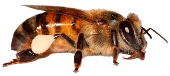

Instituto Abepoli
Quem somos
Conheça a história, missão, membros, esforços e causas do Instituto Abepoli.
︎


︎

Proteger a fauna, flora e biodiversidade,
com foco especial em abelhas nativas e polinizadores essenciais para o ecossistema.

Incentivar práticas sustentáveis e apoiar comunidades na implementação de soluções ecológicas.

Promover conhecimento sobre sustentabilidade, conservação e a importância dos polinizadores para natureza e a sociedade.
Sobre o Instituto
O Instituto Abepoli é uma organização dedicada à preservação ambiental, com foco na conservação da fauna, flora e biodiversidade. Atuando no estado de São Paulo, promovemos ações que garantem o equilíbrio dos ecossistemas, especialmente por meio da proteção das abelhas nativas e outros polinizadores.
Fundado em São José dos Campos, o Instituto Abepoli Elena Josefa de Oliveira nasceu com a missão de preservar a biodiversidade e incentivar práticas sustentáveis. Com um olhar científico e técnico, desenvolvemos pesquisas e projetos ambientais voltados à conscientização e à sustentabilidade.
Com sede em São José dos Campos e registrado sob o CNPJ 37.912.072/0001-15, o Instituto Abepoli desenvolve atividades científicas e técnicas que contribuem para a preservação da biodiversidade e o desenvolvimento sustentável, sempre em harmonia com o meio ambiente.
Ver Página